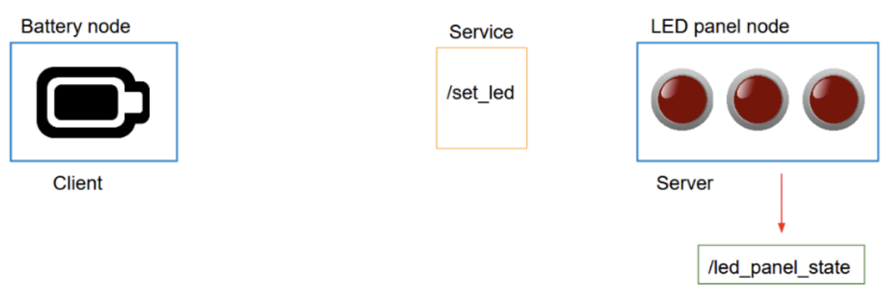
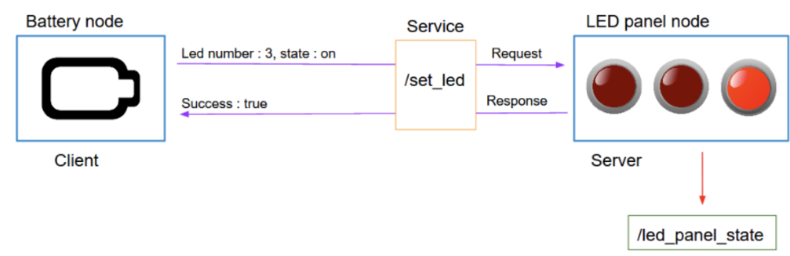
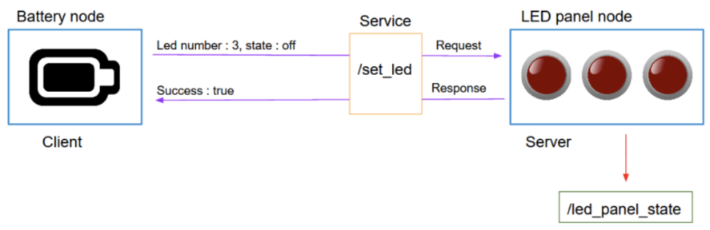
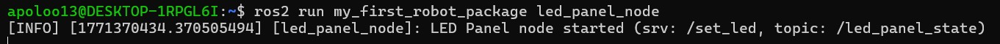
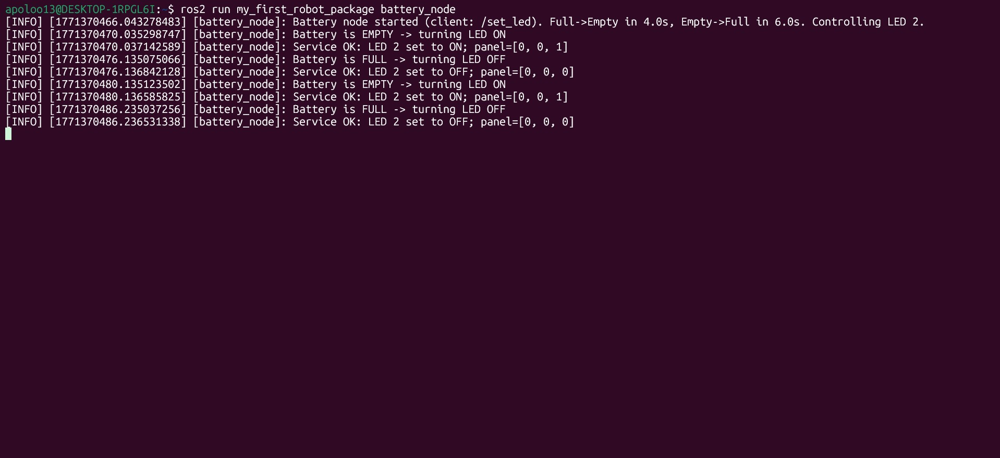
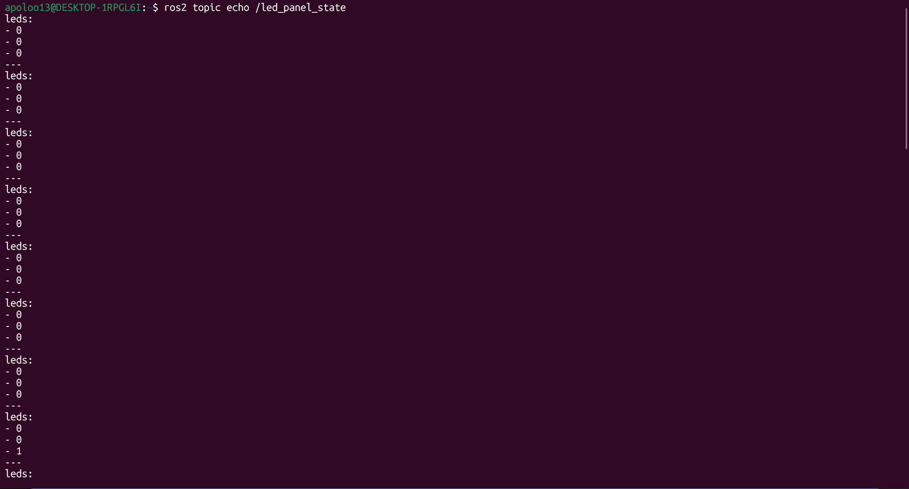
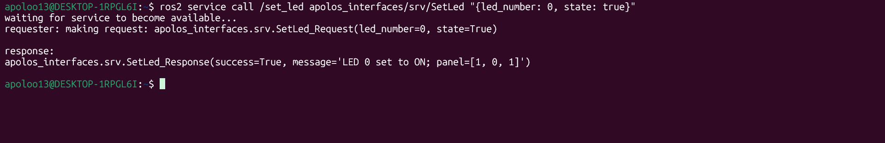
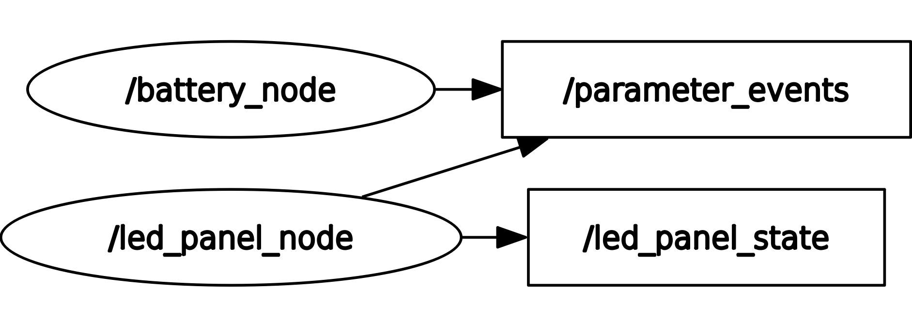

Custom Service + Custom Message (Battery and LED Panel)
1. Overview
This homework implements a complete ROS 2 system with:
- One custom message:
LedPanelState.msg - One custom service:
SetLed.srv - One topic:
/led_panel_state(publishes the LED panel status) - One service:
/set_led(turns a specific LED ON/OFF) - Two nodes:
led_panel_node(service server + publisher)battery_node(service client that simulates a battery and controls one LED)
General behavior:
- The battery starts “full”.
- After 4 seconds it becomes “empty” and the node turns ON one LED on the panel.
- After 6 additional seconds it becomes “full” and the node turns OFF that LED.
- This loop repeats forever.
2. Objectives
- Create a custom interface package with:
apolos_interfaces/msg/LedPanelState.msgapolos_interfaces/srv/SetLed.srv- Create the
led_panel_nodethat: - Maintains an internal LED array (example: 3 LEDs ->
[0,0,0]) - Publishes
/led_panel_state - Provides
/set_ledservice - Create the
battery_nodethat: - Simulates the battery timing
- Calls
/set_ledto toggle one LED - Build and run everything using
colcon. - Validate with
ros2 service callandros2 topic echo.
3. Requirements
- ROS 2 installed and sourced
- Python 3
colconbuild tools- Custom interface package:
apolos_interfaces - Python package for nodes:
my_first_robot_package
Useful inspection commands:
ros2 interface show apolos_interfaces/msg/LedPanelState
ros2 interface show apolos_interfaces/srv/SetLed



4. Package structure
Recommended workspace structure (example):
first_work-/src/
├─ apolos_interfaces/
│ ├─ CMakeLists.txt
│ ├─ package.xml
│ ├─ msg/
│ │ └─ LedPanelState.msg
│ └─ srv/
│ └─ SetLed.srv
└─ my_first_robot_package/
├─ package.xml
├─ setup.py
├─ setup.cfg
└─ my_first_robot_package/
├─ __init__.py
├─ led_panel_node.py
└─ battery_node.py
Important:
- In ament_python, the .py scripts must be inside the module folder:
my_first_robot_package/my_first_robot_package/
5. Custom interfaces (apolos_interfaces)
5.1 Custom message
File: apolos_interfaces/msg/LedPanelState.msg
Meaning:
- leds is an integer array representing each LED state.
- Example with 3 LEDs:
- [0, 0, 0] all OFF
- [0, 0, 1] last LED ON
5.2 Custom service
File: apolos_interfaces/srv/SetLed.srv
Meaning:
- Request:
- led_number: which LED index to modify (example: 0..2)
- state: true to turn ON, false to turn OFF
- Response:
- success: whether the command was valid
- message: description of what happened
5.3 CMakeLists.txt (interfaces package)
File: apolos_interfaces/CMakeLists.txt
cmake_minimum_required(VERSION 3.8)
project(apolos_interfaces)
find_package(ament_cmake REQUIRED)
find_package(rosidl_default_generators REQUIRED)
rosidl_generate_interfaces(${PROJECT_NAME}
"msg/LedPanelState.msg"
"srv/SetLed.srv"
)
ament_export_dependencies(rosidl_default_runtime)
ament_package()
5.4 package.xml (interfaces package)
File: apolos_interfaces/package.xml
<?xml version="1.0"?>
<package format="3">
<name>apolos_interfaces</name>
<version>0.0.0</version>
<description>Custom interfaces for battery + led panel homework</description>
<maintainer email="apoloo13@todo.todo">apoloo13</maintainer>
<license>TODO</license>
<buildtool_depend>ament_cmake</buildtool_depend>
<build_depend>rosidl_default_generators</build_depend>
<exec_depend>rosidl_default_runtime</exec_depend>
<member_of_group>rosidl_interface_packages</member_of_group>
</package>
6. Node 1: LED Panel (server + publisher)
File: my_first_robot_package/led_panel_node.py
6.1 Purpose
This node is responsible for the LED panel logic:
- Holds an internal list with the panel state (example:
[0, 0, 0]) - Publishes the panel state periodically on
/led_panel_state - Exposes a service
/set_ledto set one LED ON/OFF
6.2 Code (led_panel_node.py)
#!/usr/bin/env python3
import rclpy
from rclpy.node import Node
from apolos_interfaces.msg import LedPanelState
from apolos_interfaces.srv import SetLed
class LedPanelNode(Node):
def __init__(self):
super().__init__("led_panel_node")
# LED panel state (3 LEDs) -> [0, 0, 0] initially
self.leds = [0, 0, 0]
# Publisher: /led_panel_state
self.pub_state = self.create_publisher(LedPanelState, "/led_panel_state", 10)
self.timer = self.create_timer(0.5, self.publish_state)
# Service server: /set_led
self.srv = self.create_service(SetLed, "/set_led", self.cb_set_led)
self.get_logger().info("LED Panel node started (srv: /set_led, topic: /led_panel_state)")
def publish_state(self):
msg = LedPanelState()
msg.leds = self.leds
self.pub_state.publish(msg)
def cb_set_led(self, request: SetLed.Request, response: SetLed.Response):
idx = int(request.led_number)
if idx < 0 or idx >= len(self.leds):
response.success = False
response.message = f"Invalid led_number={idx}. Valid range: 0..{len(self.leds)-1}"
self.get_logger().warn(response.message)
return response
self.leds[idx] = 1 if request.state else 0
response.success = True
response.message = f"LED {idx} set to {'ON' if request.state else 'OFF'}; panel={self.leds}"
self.get_logger().info(response.message)
return response
def main(args=None):
rclpy.init(args=args)
node = LedPanelNode()
try:
rclpy.spin(node)
except KeyboardInterrupt:
pass
finally:
node.destroy_node()
rclpy.shutdown()
if __name__ == "__main__":
main()
7. Node 2: Battery (client)
File: my_first_robot_package/battery_node.py
7.1 Purpose
This node simulates the battery timing and calls the service:
- Uses timing rules:
- Full -> Empty after 4 seconds
- Empty -> Full after 6 seconds
- When battery becomes empty:
- Calls
/set_ledwithstate=true - When battery becomes full:
- Calls
/set_ledwithstate=false - Repeats forever
7.2 Code (battery_node.py)
#!/usr/bin/env python3
import rclpy
from rclpy.node import Node
from apolos_interfaces.srv import SetLed
class BatteryNode(Node):
def __init__(self):
super().__init__("battery_node")
# Parameters (optional but useful)
self.declare_parameter("led_number", 2) # which LED to control (0..2)
self.declare_parameter("time_to_empty", 4.0) # seconds until empty
self.declare_parameter("time_to_full", 6.0) # seconds until full again
self.led_number = int(self.get_parameter("led_number").value)
self.time_to_empty = float(self.get_parameter("time_to_empty").value)
self.time_to_full = float(self.get_parameter("time_to_full").value)
# Service client: /set_led
self.client = self.create_client(SetLed, "/set_led")
# Battery state
self.is_full = True
self.state_start_time = self.get_clock().now()
# Tick loop to simulate time
self.timer = self.create_timer(0.1, self.tick)
self.get_logger().info(
f"Battery node started (client: /set_led). "
f"Full->Empty in {self.time_to_empty}s, Empty->Full in {self.time_to_full}s. "
f"Controlling LED {self.led_number}."
)
def seconds_since_state_start(self) -> float:
now = self.get_clock().now()
dt = now - self.state_start_time
return dt.nanoseconds / 1e9
def tick(self):
elapsed = self.seconds_since_state_start()
# Full -> Empty after time_to_empty seconds
if self.is_full and elapsed >= self.time_to_empty:
self.is_full = False
self.state_start_time = self.get_clock().now()
self.get_logger().info("Battery is EMPTY -> turning LED ON")
self.call_set_led(self.led_number, True)
# Empty -> Full after time_to_full seconds
elif (not self.is_full) and elapsed >= self.time_to_full:
self.is_full = True
self.state_start_time = self.get_clock().now()
self.get_logger().info("Battery is FULL -> turning LED OFF")
self.call_set_led(self.led_number, False)
def call_set_led(self, led_number: int, state: bool):
if not self.client.service_is_ready():
self.get_logger().warn("Service /set_led not available yet...")
return
req = SetLed.Request()
req.led_number = int(led_number)
req.state = bool(state)
future = self.client.call_async(req)
future.add_done_callback(self.on_response)
def on_response(self, future):
try:
res = future.result()
if res.success:
self.get_logger().info(f"Service OK: {res.message}")
else:
self.get_logger().warn(f"Service FAIL: {res.message}")
except Exception as e:
self.get_logger().error(f"Service call failed: {e}")
def main(args=None):
rclpy.init(args=args)
node = BatteryNode()
try:
rclpy.spin(node)
except KeyboardInterrupt:
pass
finally:
node.destroy_node()
rclpy.shutdown()
if __name__ == "__main__":
main()
8. Register executables in setup.py
In your my_first_robot_package/setup.py, ensure the console scripts include:
entry_points={
"console_scripts": [
"led_panel_node = my_first_robot_package.led_panel_node:main",
"battery_node = my_first_robot_package.battery_node:main",
],
},
9. Build and run
9.1 Build the workspace
9.2 Terminal A (LED Panel node)
Image placeholder (Terminal A evidence):

Commands (Terminal A):
9.3 Terminal B (Battery node)
Image placeholder (Terminal B evidence):

Commands (Terminal B):
9.4 Terminal C (Observe topic)
Image placeholder (Terminal C evidence):

Commands (Terminal C):
10. Manual test (service call)
You can test the service without the battery node.
Image placeholder (service call evidence):

Commands:
source ~/first_work-/src/install/setup.bash
ros2 service call /set_led apolos_interfaces/srv/SetLed "{led_number: 2, state: true}"
ros2 service call /set_led apolos_interfaces/srv/SetLed "{led_number: 2, state: false}"
11. Optional verification
List nodes:
List topics:
List services:
Check the custom interfaces:
ros2 interface show apolos_interfaces/msg/LedPanelState
ros2 interface show apolos_interfaces/srv/SetLed
Graph view:

12. Troubleshooting
1) Interface import errors (cannot import apolos_interfaces.msg or apolos_interfaces.srv)
- Rebuild and re-source the workspace:
apolos_interfaces is built before my_first_robot_package (colcon handles this if dependencies are correct).
2) Service not available (Service /set_led not available yet...)
- Start Terminal A first (LED Panel node).
- Verify with:
3) Wrong LED index
- If you only have 3 LEDs, valid indices are 0, 1, 2.
- The service will return success=false if the index is invalid.
4) Topic not publishing - Confirm the LED Panel node is running. - Check: